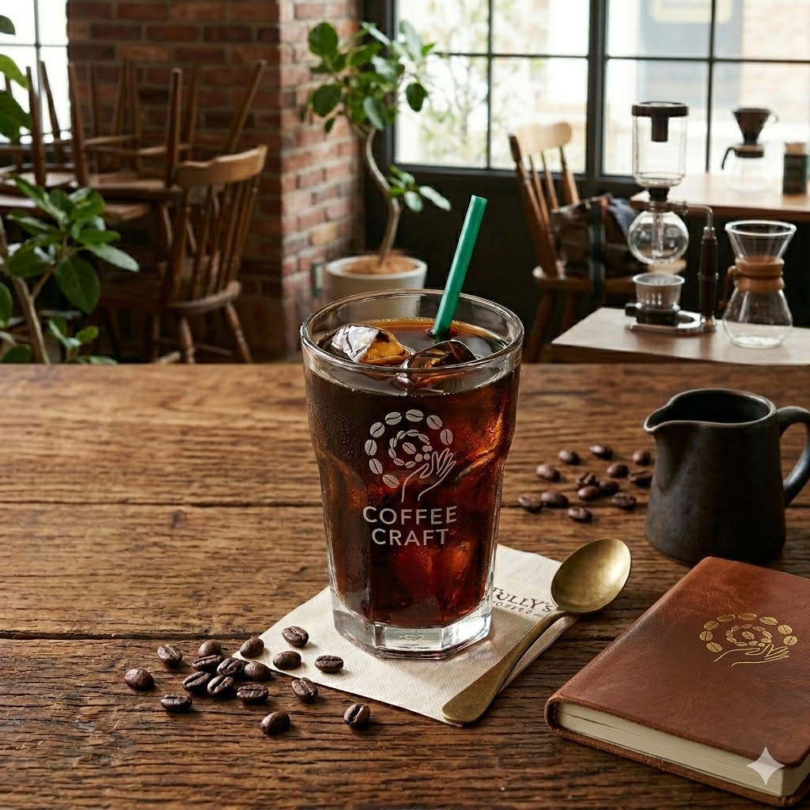
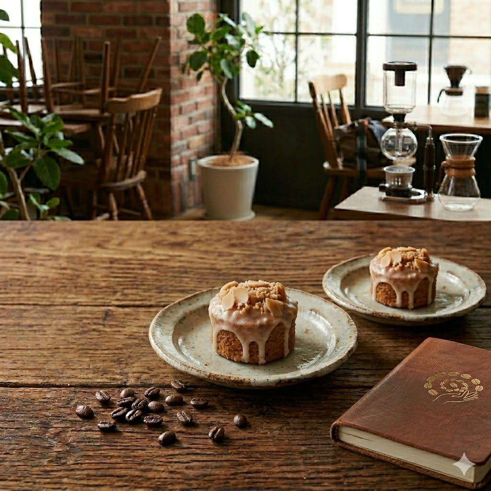
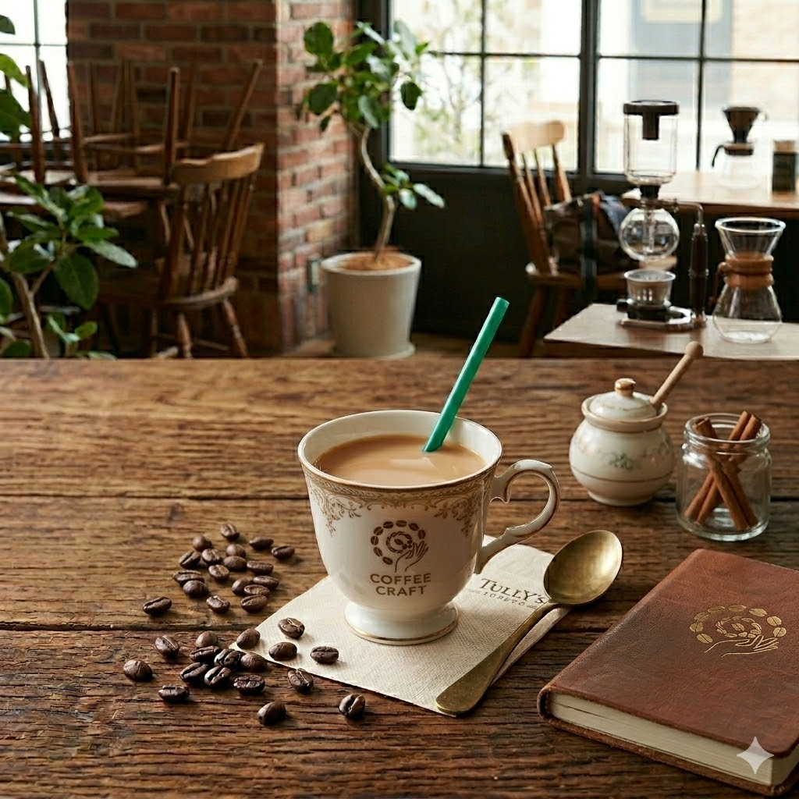

Menu

さわやかコーヒー
芳醇な香りと深いコク、こだわりの一杯 選び抜かれた高品質なコーヒー豆を丁寧に焙煎し、豊かな香りと奥深いコクを最大限に引き出しました。一口飲むたびに、口いっぱいに広がる香ばしさと、すっきりとした後味をお楽しみいただけます。

ナッツとキャラメルのパウンドケーキ
香ばしいナッツを贅沢にトッピングし、しっとりとした食感に焼き上げたこだわりのミニケーキです。 一口ごとに広がる優しい甘さと、キャラメルソースの濃厚なコク、そしてナッツの小気味よい食感が絶妙なアクセント。

濃厚ロイヤルミルクティー
厳選した紅茶葉をじっくりと淹れ、まろやかなミルクをたっぷりと合わせました。 上品な紅茶の香りと、口いっぱいに広がるコク深い甘みが優しく調和した、至福の一杯です。